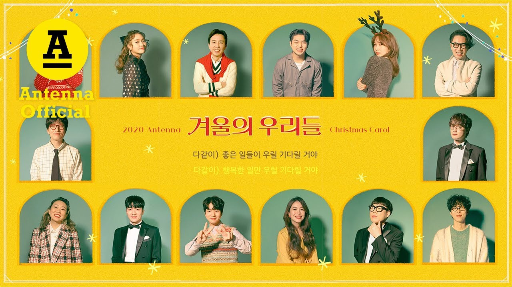
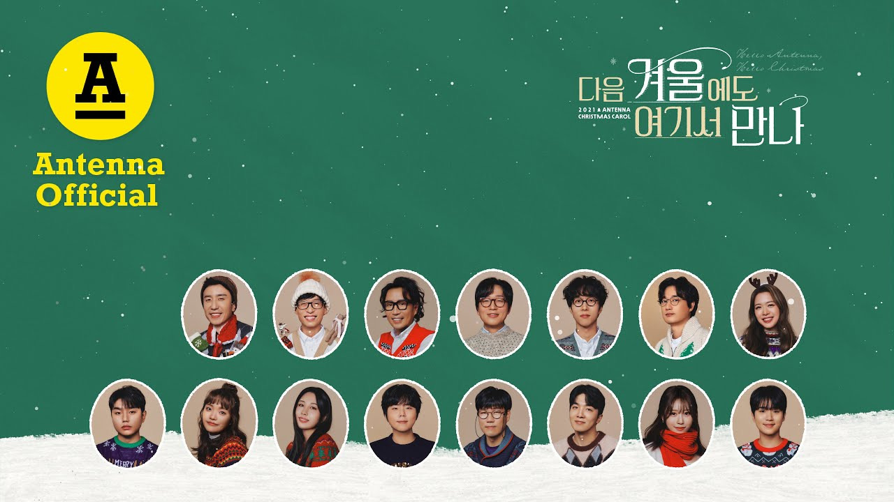

안녕하세요 한스입니다.
안테나 뮤직은 겨울마다 감성적이고 따뜻한 노래를 발표하며 리스너들의 마음을 녹이고 있습니다. 저희 가족들은 제이레빗, 바버렛츠와 함께 이 두곡을 꼭 듣는데요. 오늘은 안테나 뮤직에서 발표한 겨울 노래 두 곡을 소개해드리겠습니다.
* 겨울의 우리들(2020)
겨울의 우리들은 2020년 12월 20일에 발매된 안테나 뮤직의 크리스마스 캐럴입니다. 이 노래는 안테나 소속 아티스트 전원이 참여한 특별한 프로젝트로, 코로나19로 힘든 한 해를 보낸 모든 이들을 위로하고자 하는 마음을 담았습니다.
이 곡에는 유희열, 정재형, 루시드폴, 페퍼톤스, 박새별, 적재, 샘김, 정승환 등 안테나의 모든 아티스트들이 참여했습니다. 각자의 개성 넘치는 목소리가 어우러져 아름다운 하모니를 만들어냅니다. 마치 안테나 뮤직 가족들이 모여 앉아 따뜻한 이야기를 나누는 듯한 포근한 느낌을 받을 수 있습니다.
겨울의 우리들은 재즈를 베이스로 한 미디엄 템포의 팝 발라드입니다. 슬레이 벨, 현악기, 재즈 피아노, 더블 베이스 등 다양한 악기가 어우러져 풍성한 사운드를 만들어냅니다. 특히 과거의 크리스마스 싱글을 연상시키는 재즈 요소와 현대적인 겨울 노래의 경쾌함이 절묘하게 조화를 이루고 있습니다.
가사에는 크리스마스의 따뜻함과 함께 새해를 맞이하는 희망의 메시지가 담겨 있습니다. "내일은 좋은 일들이 우릴 기다릴 거야"라는 노랫말처럼, 모두가 힘들었던 한 해를 위로하고 더 나은 미래를 향한 희망을 노래합니다.

* 다음 겨울에도 여기서 만나(2021)
두 번째로 소개할 노래는 다음 겨울에도 여기서 만나입니다. 이 곡은 2021년 안테나 크리스마스 캐럴로 발표되었습니다.
다음 겨울에도 여기서 만나는 R&B 기반의 감성적인 스타일이 돋보이는 팝 발라드입니다. 겨울 분위기를 연상시키는 다양한 사운드와 모두의 행복한 연말을 기원하는 메시지를 담고 있습니다.
이 곡 역시 안테나 소속 아티스트들이 총출동하여 각자의 개성 있는 목소리로 노래를 채워갑니다. 특히 안테나로 합류한 유재석과 러블리즈 해체로 힘든 시기 이미주가 극적으로 합류하며, 뮤직비디오에서도 클라이막스에 등장합니다. 안테나 소속의 다양한 아티스틀의 음색과 스타일이 조화롭게 어우러져 풍성한 사운드를 만들어냈습니다.
다음 겨울에도 여기서 만나는 제목에서 알 수 있듯이, 함께 시간을 보내고 다시 만나자는 약속의 메시지를 담고 있습니다. 이는 코로나19로 인해 만남이 어려워진 상황에서 더욱 의미 있게 다가옵니다.

맺음말
안테나 뮤직의 이 두 겨울 노래는 각각의 특징을 가지고 있지만, 공통적으로 따뜻한 감성과 희망의 메시지를 전달합니다. 겨울의 우리들은 재즈적 요소와 함께 모든 아티스트의 하모니를 강조했다면, 다음 겨울에도 여기서 만나는 R&B 감성의 팝 발라드로 겨울의 로맨틱한 분위기를 자아냅니다.
두 곡 모두 안테나 뮤직 특유의 감성적이고 세련된 사운드를 잘 보여주는 노래입니다. 특히 여러 아티스트들의 목소리가 어우러진 하모니는 안테나 뮤직만의 독특한 매력을 잘 보여줍니다. 이 노래들을 들으면 추운 겨울 날씨에도 마음이 따뜻해지는 것을 느낄 수 있을거에요. 연말연시에 사랑하는 사람들과 함께 이 노래를 들으며 한 해를 마무리하고 새로운 희망을 품어보는 것은 어떨까요? 안테나 뮤직의 겨울 노래와 함께라면, 올겨울도 따뜻하고 행복한 시간이 될 거라 생각합니다. 안테나 뮤직은 2021년 이후 겨울노래를 다시 발표하고 있지 않고 있는데, 새로운 겨울 노래를 발표해주면 좋겠습니다.